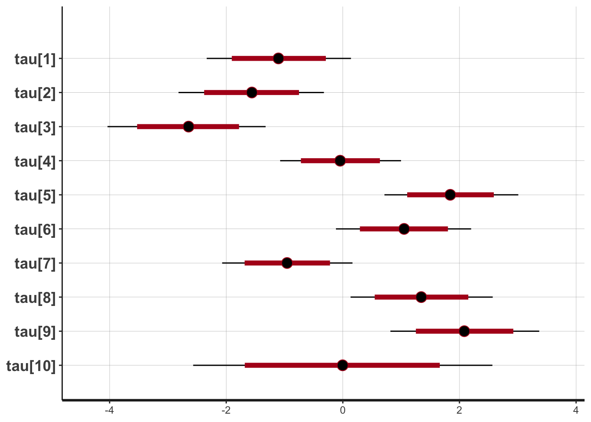
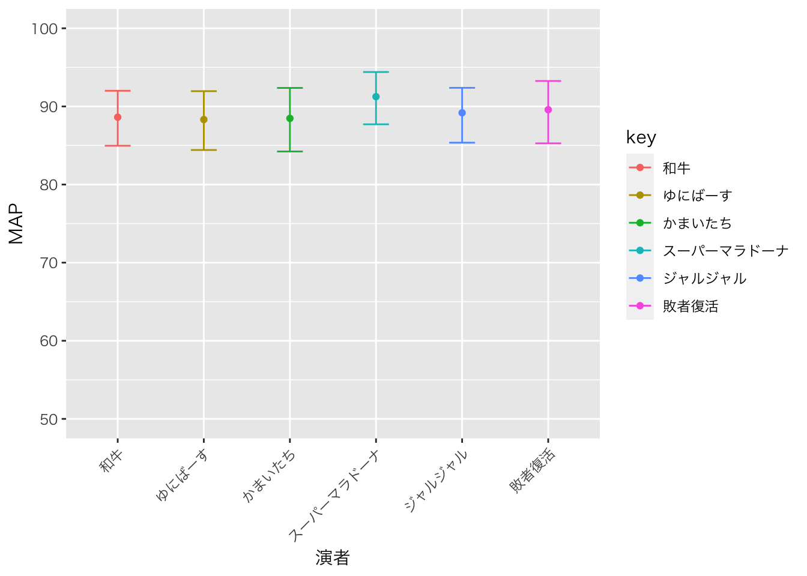
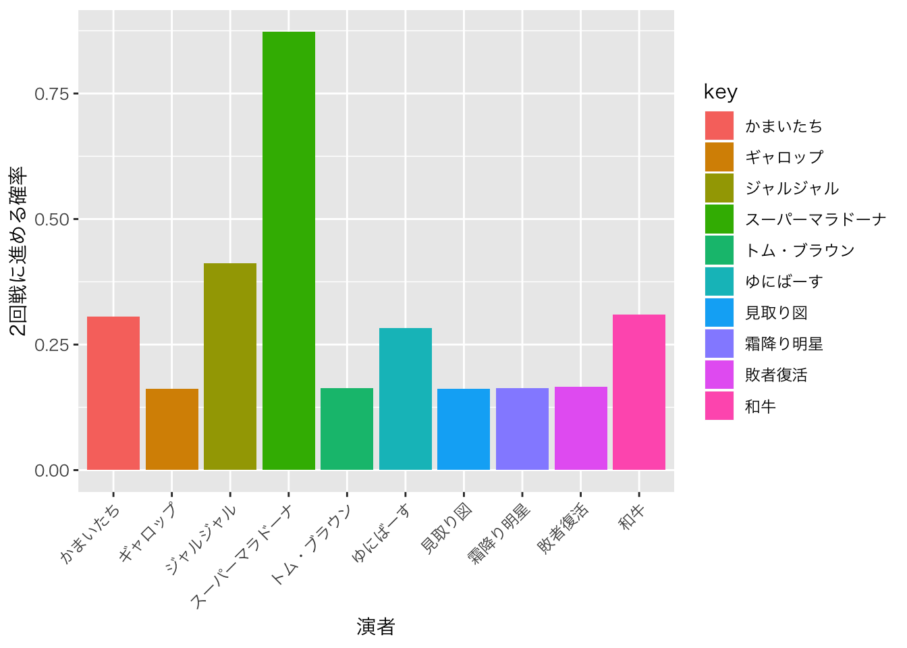

モデルを考える
さて，現段階でわかっているのは演者と審査員の名前だけです。演者の中には昨年度までに出たことがある人もいれば，M-1初登場の人もいます。基本的に「お笑い力」が採点に反映されると考えていますが，初登場の人はどれぐらいのお笑い力があるかわかりません。そこで何か推定のためのヒントが必要になります。
今回私が考えたのは，「決勝戦に出るぐらいなので，実力伯仲，皆ある程度の能力があって，良い目がでるといいな」ということがひとつ。もう一つは，「M-1は出番の順番によって当たり外れがあるんじゃないか」ということです。昨年度から，演じる順番は当日くじで決めることになっており，今の段階では誰が何番手になるかもわかりませんが，全体的に5,6番目ぐらいに舞台に立てる人が有利なんじゃないかと思っています。その辺を加味してモデリングしていきます。
まず最初の「みんなある程度の能力がある」という前提から，個々の演者の能力\(\theta_i\)は平均\(\mu\),標準偏差\(\sigma\)の正規分布に従うというモデルを考えます。
\[\theta_i \sim N(\mu,\sigma^2)\]
加えて，順番\(k\)の効果\(\tau_k\)が加わったのがその日の面白さ\(\theta_i+\tau_k\)です。この\(\tau_k\)は相対的な効果なので，\(\sum_{k=1}^{10} \tau_k=0\)という制約をかけておくことに注意です。
そして評定者\(r\)による評価のブレが加わる(小杉,2017)という考えをここでも採用して，順番\(k\)の演者\(i\)のスコア\(Y_{ik}\)は，
\[Y_{ik} \sim N(\theta_i + \tau_k, \phi_r)\]
とします。
さて，最近は審査員も増えてきました。色々な人がいると思いますが，基本はお笑いをわかっている人ということで，「お笑いをわかっている人群」のなかから選ばれていると考え，\[ \phi_r \sim cauchy(\phi_\mu,5)\]という階層モデルを考えます。
これを元に作ったStanコードが次のようになります。
## data{
## int<lower=0> L; //データ長
## int P; //演者数
## int R; //審査員数
## int Pid[L]; //演者 ID
## int Ord[L]; //ネタ順
## int Rid[L]; //審査員 ID
## real Y[L]; //スコア
## }
##
## parameters{
## real theta[P]; // 演者の実力
## real<lower=0,upper=100> mu; // 実力の事前分布
## real tau_pre[9]; // 順番の効果(自由度分)
## real<lower=0> sig; // 実力が発揮できるかな？誤差成分
## real<lower=0> phi[R]; // 審査員のブレ
## real<lower=0> phi_mu; // 審査員のブレの平均
## }
##
## transformed parameters{
## real tau[10]; // 順番の効果(1番手から10番手まで)
## tau[1:9] = tau_pre;
## tau[10] = 0-sum(tau_pre); // 順番の効果は相対的で，総和が0の縛りをかける
## }
##
## model{
## // 尤度
## for(l in 1:L){
## Y[l] ~ normal( theta[Pid[l]]+tau[Ord[l]] , phi[Rid[l]] );
## }
##
## //事前分布
## theta ~ normal(mu,sig);
## mu ~ normal(0,100);
## sig ~ cauchy(0,5);
## phi ~ cauchy(phi_mu,5);
## }推定１；昨年度までのデータに合わせてみる
まずデータなのですが，去年まで使っていたデータには演じた順番の情報がありませんので，それを追加した新しいデータセットを作成しました。
# ファイルを読み込みます
m1 <- read_csv("M1scoreOrd.csv",na=".")## Parsed with column specification:
## cols(
## .default = col_double(),
## 演者 = col_character()
## )## See spec(...) for full column specifications.# データを縦長にします
m1 %>% tidyr::gather(審査員,val,-年代,-演者,-ネタ順,factor_key=TRUE) %>%
# 欠損値を削除します
na.omit %>%
# 2018年度のデータはまだ使わないです
dplyr::filter(年代!=18) %>%
# factor型にします
mutate(演者 = factor(演者)) -> m1.long推定
以上のデータを次のコードで推定しました。
dataset <- list(L = nrow(m1.long),
P = max(as.numeric(m1.long$演者)),
R = max(as.numeric(m1.long$審査員)),
Pid = as.numeric(m1.long$演者),
Ord = m1.long$ネタ順,
Rid = as.numeric(m1.long$審査員),
Y = m1.long$val)
model1 <- stan_model('m1ord.stan')
fit1 <- sampling(model1,dataset)結果；順序の効果はどれぐらいあるのか
推定の結果を次に示します。
print(fit1,pars=c("mu","tau"))## Inference for Stan model: m1ord.
## 4 chains, each with iter=40000; warmup=15000; thin=1;
## post-warmup draws per chain=25000, total post-warmup draws=1e+05.
##
## mean se_mean sd 2.5% 25% 50% 75% 97.5% n_eff Rhat
## mu 87.70 0.00 0.48 86.75 87.38 87.71 88.03 88.65 105977 1
## tau[1] -1.10 0.00 0.63 -2.33 -1.52 -1.10 -0.68 0.14 66259 1
## tau[2] -1.56 0.00 0.64 -2.82 -2.00 -1.56 -1.13 -0.32 70541 1
## tau[3] -2.65 0.01 0.69 -4.04 -3.11 -2.65 -2.19 -1.32 6388 1
## tau[4] -0.05 0.00 0.53 -1.08 -0.41 -0.05 0.31 1.00 78612 1
## tau[5] 1.84 0.00 0.58 0.71 1.45 1.84 2.23 3.01 14339 1
## tau[6] 1.05 0.00 0.59 -0.12 0.65 1.05 1.45 2.20 58391 1
## tau[7] -0.95 0.00 0.57 -2.07 -1.34 -0.96 -0.57 0.17 67177 1
## tau[8] 1.35 0.00 0.62 0.13 0.93 1.34 1.77 2.57 18194 1
## tau[9] 2.08 0.00 0.65 0.82 1.64 2.08 2.52 3.37 59863 1
## tau[10] -0.01 0.00 1.31 -2.57 -0.89 0.00 0.87 2.56 70604 1
##
## Samples were drawn using NUTS(diag_e) at Tue Dec 4 09:43:31 2018.
## For each parameter, n_eff is a crude measure of effective sample size,
## and Rhat is the potential scale reduction factor on split chains (at
## convergence, Rhat=1).plot(fit1,pars="tau")## ci_level: 0.8 (80% intervals)## outer_level: 0.95 (95% intervals)
ここからわかるのは，芸人さんの基本的な実力は平均87.70，標準偏差3.3ぐらいで分布しているということ。 順序の効果は，やはり1，2，3，4番手はスコアがマイナスになる傾向があり，5，6，8，9番手あたりがプラスになるということ。同じ実力なら9番手になるのがいいですね，なんてことがわかります。95%確信区間で考えたら-3.91から+3.34ぐらいまであります。大きければ6点は違うんですよね。実力の平均点87.71と合わせて考えると，これが順序効果で83.8から91.05ぐらいまで変わる可能性はあるわけです。際どい勝負の時は，審査員が結構鍵を握っています。
推定２；予測
さて，ここまでは既存のデータを使った当てはめです。今回狙うのは「明日優勝するのは誰か」というところです。幸い11/24に審査員が発表されました。新顔の審査員さんもいらっしゃいますが，半数ぐらいは従来の審査員なので，その方々がどの程度ぶれる人なのかは推定できそうです。わからないのは，「新顔の演者の実力」，「新顔の審査員の評価のブレ」，「演者の順番」です。
ベイズ推定では，これら未知のデータはパラメータとして，推定対象にすることで予測ができます。 早速やっていきましょう。
データの中には，2018年度の審査員，演者のデータは含めていますが，順番がわからないので，順番は全て1番に統一しました。点数はわからないのですが，Stanは欠損値を受け付けませんので，999点というありえない数字を入れました。コードの中で，999点なら推定対象とする，という条件分岐を行うことで対応します。
コードはこちらになります。
## data{
## int<lower=0> L; //データ長
## int P; //演者数
## int R; //審査員数
## int Pid[L]; //演者 ID
## int Ord[L]; //ネタ順
## int Rid[L]; //審査員 ID
## real Y[L]; //スコア
## }
##
## parameters{
## real theta[P]; // 演者の実力
## real<lower=0,upper=100> mu; // 実力の事前分布
## real tau_pre[9]; // 順番の効果(自由度分)
## real<lower=0> sig; // 実力が発揮できるかな？誤差成分
## real<lower=0> phi[R]; // 審査員のブレ
## real<lower=0> phi_mu; // 審査員のブレの平均
## real<lower=0,upper=100> missY[10,7]; //推定したい10組の演者，7人の審査員
## }
##
## transformed parameters{
## real tau[10]; // 順番の効果(1番手から10番手まで)
## tau[1:9] = tau_pre;
## tau[10] = 0-sum(tau_pre); // 順番の効果は相対的で，総和が0の縛りをかける
## }
##
##
## model{
## for(l in 1:L){
## if(Y[l] != 999){
## // データがあれば尤度を計算
## Y[l] ~ normal( theta[Pid[l]]+tau[Ord[l]] , phi[Rid[l]] );
## }else{
## // 今年の分はパラメータとして対数尤度に追加
## missY[Pid[l],Rid[l]] ~ normal(theta[Pid[l]]+tau[1] , phi[Rid[l]] );
## }
## }
##
## // 事前分布
## theta ~ normal(mu,sig);
## mu ~ normal(87,100);
## sig ~ cauchy(0,5);
## phi ~ cauchy(phi_mu,5);
## }これにデータを加えて分析を始めます。 データの与え方は次の通り。
# 今年のファイナリスト，審査員をfactor型の前に出すために準備
finalist <- c("和牛","霜降り明星","ゆにばーす","見取り図",
"かまいたち","スーパーマラドーナ","ジャルジャル",
"トム・ブラウン","ギャロップ","敗者復活")
judge <- c("オール巨人","上沼恵美子","富澤たけし","立川志らく",
"塙宣之","中川礼二","松本人志")
# データの加工。まずは縦長に
m1 %>% tidyr::gather(審査員,val,-年代,-演者,-ネタ順,factor_key=TRUE) %>%
# 欠損値を削除します
na.omit %>%
# factor型にします
mutate(演者 = factor(演者)) %>%
# 演者の最初の10人を今年の人たちに
# 審査員の最初の7人を今年の人たちに
mutate(演者 = fct_relevel(.$演者,finalist),
審査員 = fct_relevel(.$審査員,judge ))-> m1.long2018## Warning: Problem with `mutate()` input `演者`.
## x Unknown levels in `f`: 敗者復活
## ℹ Input `演者` is `fct_relevel(.$演者, finalist)`.## Warning: Unknown levels in `f`: 敗者復活そして推定。
さて，今年の演者の能力推定値です。 バーは95%確信区間，M-1初参戦の新参者は敗者復活一つに代表させました。
fit2.mcmc %>% dplyr::select(starts_with("missY.")) %>%
# 10組の予想される平均点
transmute(Y1=dplyr::select(.,starts_with("missY.1.")) %>% apply(.,1,mean),
Y2=dplyr::select(.,starts_with("missY.2.")) %>% apply(.,1,mean),
Y3=dplyr::select(.,starts_with("missY.3.")) %>% apply(.,1,mean),
Y4=dplyr::select(.,starts_with("missY.4.")) %>% apply(.,1,mean),
Y5=dplyr::select(.,starts_with("missY.5.")) %>% apply(.,1,mean),
Y6=dplyr::select(.,starts_with("missY.6.")) %>% apply(.,1,mean),
Y7=dplyr::select(.,starts_with("missY.7.")) %>% apply(.,1,mean),
Y8=dplyr::select(.,starts_with("missY.8.")) %>% apply(.,1,mean),
Y9=dplyr::select(.,starts_with("missY.9.")) %>% apply(.,1,mean),
Y10=dplyr::select(.,starts_with("missY.10.")) %>% apply(.,1,mean)) %>%
# 名前をつける
setNames(finalist) %>%
# 初のファイナリストは冗長な情報なのでカットし，敗者復活の人で代替。
dplyr::select(和牛,ゆにばーす,かまいたち,スーパーマラドーナ,ジャルジャル,敗者復活) %>%
# 縦長にして要約する
tidyr::gather(key,val,factor_key=TRUE) %>% group_by(key) %>%
summarise(EAP=mean(val),MAP=median(val),
U95=quantile(val,0.975),L95=quantile(val,0.025)) %>% print %>%
ggplot(aes(x=key,y=MAP,color=key))+geom_point() +xlab("演者")+
geom_errorbar(aes(ymax=U95,ymin=L95,width=0.3))+ylim(50,100)+
theme(axis.text.x = element_text(angle = 45, hjust = 1)) ## `summarise()` ungrouping output (override with `.groups` argument)## # A tibble: 6 x 5
## key EAP MAP U95 L95
## <fct> <dbl> <dbl> <dbl> <dbl>
## 1 和牛 88.6 88.6 92.0 85.0
## 2 ゆにばーす 88.3 88.3 92.0 84.4
## 3 かまいたち 88.4 88.5 92.4 84.2
## 4 スーパーマラドーナ 91.3 91.3 94.4 87.7
## 5 ジャルジャル 89.1 89.2 92.4 85.4
## 6 敗者復活 89.5 89.6 93.3 85.3
これをみると，新参者はやはり推定の幅が広くなっていますね。実力があるのはスーパーマラドーナ，ついでかまいたちというところでしょうか。和牛，ゆにばーす，かまいたちの三組は実力がかなり揃っており，ジャルジャルが少し上で，トップがスーパーマラドーナなのです。
上位3組に入る確率
さて，ここでのスコアは審査員が100点満点でつけるスコア。これで上位三組に入れば，あとは2本目のネタをやり，そのあとは審査員が名前を投票するというシステムが慣例でした。
このデータで予測できるのは，この決勝戦の1回戦まで。2回戦に進めるかどうかが肝要です。ということで，スコアの値よりもTOP3に入れるのかどうかを検証すること，が重要でしょう。
ということで，MCMCサンプル毎に順位をつけ，TOP3に入れるかどうかを検証してみました。
fit2.mcmc %>% dplyr::select(starts_with("missY.")) %>%
# 10組の予想される得点
transmute(Y1=dplyr::select(.,starts_with("missY.1.")) %>% apply(.,1,sum),
Y2=dplyr::select(.,starts_with("missY.2.")) %>% apply(.,1,sum),
Y3=dplyr::select(.,starts_with("missY.3.")) %>% apply(.,1,sum),
Y4=dplyr::select(.,starts_with("missY.4.")) %>% apply(.,1,sum),
Y5=dplyr::select(.,starts_with("missY.5.")) %>% apply(.,1,sum),
Y6=dplyr::select(.,starts_with("missY.6.")) %>% apply(.,1,sum),
Y7=dplyr::select(.,starts_with("missY.7.")) %>% apply(.,1,sum),
Y8=dplyr::select(.,starts_with("missY.8.")) %>% apply(.,1,sum),
Y9=dplyr::select(.,starts_with("missY.9.")) %>% apply(.,1,sum),
Y10=dplyr::select(.,starts_with("missY.10.")) %>% apply(.,1,sum)) %>%
# 名前をつける
setNames(finalist) %>%
# iter番号を付与
tibble::rownames_to_column() %>%
# 縦長に
tidyr::gather(key,val,-rowname) %>%
# iterごとにグループ化
group_by(rowname) %>%
# 順序 RANK関数は昇順なので最大値+1から引いて逆転させる
mutate(RANK=11-rank(val)) %>%
# ungroup
ungroup(rowname) %>%
# 二本目ができるかどうか
mutate(FINAL= ifelse(RANK<=3,TRUE,FALSE),
TOP1 = ifelse(RANK==1,TRUE,FALSE),
TOP2 = ifelse(RANK==2,TRUE,FALSE),
TOP3 = ifelse(RANK==3,TRUE,FALSE)) %>%
# 演者ごとにグループ化
group_by(key) %>%
# 決勝に行ける確率
summarise(FRatio=sum(FINAL)/100000,
TOP1ratio=sum(TOP1)/100000,
TOP2ratio=sum(TOP2)/100000,
TOP3ratio=sum(TOP3)/100000) %>%
dplyr::arrange(desc(FRatio)) %>% print %>%
# 図にする
ggplot(aes(x=key,y=FRatio,fill=key))+geom_bar(stat='identity')+
xlab("演者")+ylab("2回戦に進める確率")+
theme(axis.text.x = element_text(angle = 45, hjust = 1)) ## `summarise()` ungrouping output (override with `.groups` argument)## # A tibble: 10 x 5
## key FRatio TOP1ratio TOP2ratio TOP3ratio
## <chr> <dbl> <dbl> <dbl> <dbl>
## 1 スーパーマラドーナ 0.840 0.488 0.230 0.122
## 2 敗者復活 0.463 0.121 0.164 0.177
## 3 ジャルジャル 0.344 0.0621 0.123 0.159
## 4 和牛 0.259 0.0369 0.0946 0.127
## 5 かまいたち 0.257 0.0524 0.0916 0.113
## 6 ゆにばーす 0.233 0.0446 0.0815 0.107
## 7 霜降り明星 0.168 0.0454 0.0743 0.0489
## 8 ギャロップ 0.152 0.0571 0.0466 0.048
## 9 見取り図 0.144 0.0466 0.0480 0.0496
## 10 トム・ブラウン 0.140 0.0452 0.0462 0.0485
結果を見ると，スーパーマラドーナは87%の確率で決勝2本目に行けます！強いぞ！ついでジャルジャル，和牛ですが，3/10＝0.3を少し上回る程度，かまいたち以下は偶然レベルでしか決勝には残れないという結果です。
これをみると，実力が少し抜きん出ているのはスーパーマラドーナなのです。 ちなみにTOP通過する確率がTOP1ratioですが，これでもスーパーマラドーナが50％越え。抜きん出ています。
これまでの傾向，今年の審査員との組み合わせなどを考えると，今年はスーパーマラドーナでしょう！
もっとも勝負は水物。実力も僅差ですし，新しい審査員がどういう評価をするかもわかりません。 この予想が当たるにせよ外れるにせよ，今年の結果が出た後で，また情報をアップートしていこうとおもいます。 それがベイズのいいところだものね。
Enjoy Bayesian Modeling & Merry Christmas!